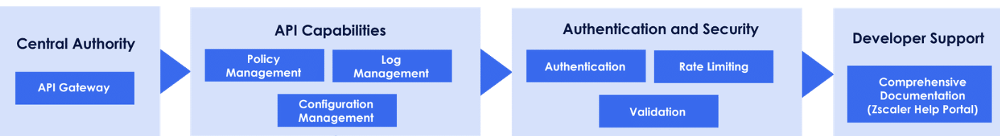
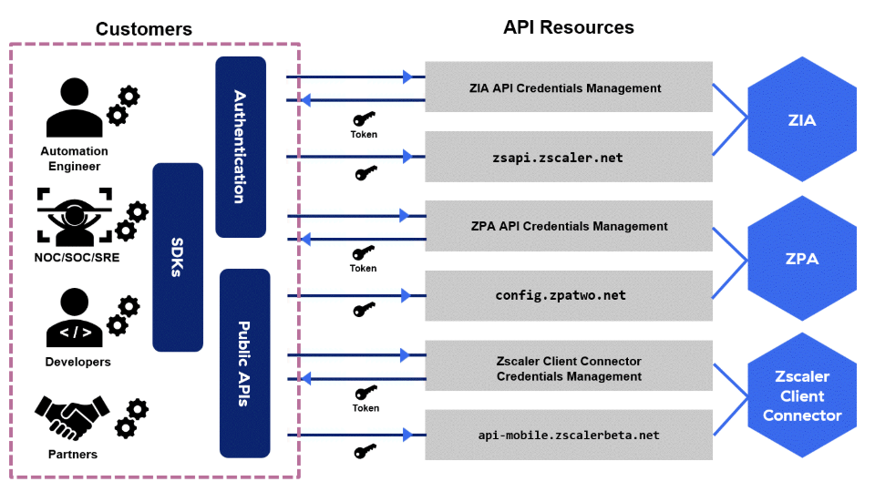
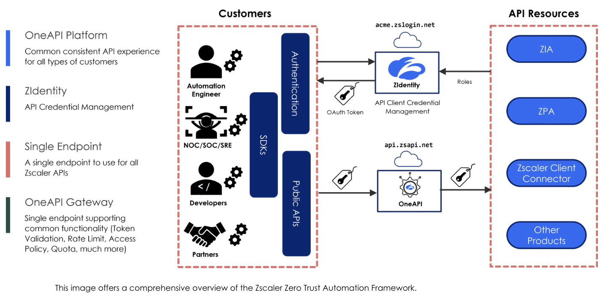

Zscaler API Architecture and Access
Zscaler APIs provide a secure and scalable approach to programmatically manage and configure Zscaler services, enabling seamless policy enforcement, configuration management, and comprehensive logging through an authenticated and documented API gateway.

Central Authority Level
API Capabilities
Authentication and Security
Traditional Zscaler Automation Framework
Before OneAPI, the traditional automation framework had significant limitations. Each product required separate management, creating complexity and error potential.
Challenges of the Traditional Approach
Deploying new SaaS solutions at scale is complex and prone to errors, leading to slow rollouts and increased costs. Fragmented ownership among multiple administrators — particularly in the context of mergers or acquisitions — results in accountability issues.
| Challenge | Description | Impact |
|---|---|---|
| Credential Management | Credentials maintained within the administrator console of each product | Multiple sets of credentials to manage and rotate per product |
| API Endpoint Fragmentation | Each product API has a separate API endpoint | Scripts need multiple endpoints; increased complexity |
| Common Functionality Variations | Variations on common API features such as Rate Limiting | Cannot apply uniform rate-limit handling across products |
| Multiple Auth Flows | Each product required separate registration, auth, and token requests | Multiple sets of code for each product's authentication flow |

Zscaler Zero Trust Automation Framework
The ZIdentity framework centralises identity management within the Zscaler ecosystem, integrating authentication, entitlement management, and external identity providers. This represents the modern replacement for the fragmented traditional approach.

Framework Components
Step-Up Authentication
OneAPI supports step-up authentication — a dynamic request for stronger authentication when accessing sensitive resources or when risk signals are detected.
| Level | Authentication Strength |
|---|---|
| AL1 | Basic authentication — standard login |
| AL2 | MFA with second factor (SMS OTP, email OTP) |
| AL3 | Strong MFA (TOTP via Google Authenticator) |
| AL4 | Hardware-backed authentication (FIDO key) |
Flow: Login → Access Sensitive Resource → Step-Up Triggered → MFA Challenge → Access Granted. Benefits: Enhanced Security, Dynamic Risk-Based Access, Simplified Compliance.
Common Use Cases for Zscaler Zero Trust Automation
These practical examples demonstrate how the Zero Trust Automation framework and OneAPI are applied to solve real administrative challenges across Zscaler products.
ZIA API provides capabilities to automate and manage: URL filtering, policy management, user and group configurations, traffic forwarding, and reporting.
Demo scenario: Block a gambling URL using ZIA API. Steps:
- Verify the URL is accessible in a test browser session
- Navigate to ZIA Admin Portal → Manage → URL Categories
- Check if the URL filtering category (e.g., "Gambling") is enabled to block
- Use Postman REST API client with the ZIA collection
- Call the URL Filtering Policy endpoint, check if gambling category is blocked
- Send a PUT request to update the URL filtering policy using the category ID
- Add the URL to the custom categories in the JSON body
- Verify the URL is now blocked in the browser
Prerequisite: Add an API key. Only admins with the API Key Management role can create API keys for ZIA.
ZPA API enables automation of: managing application access policies, configuring App Connector groups, retrieving user device information, monitoring system health.
Demo scenario: Create an App Connector group using the OneAPI ZPA collection.
- Log in to ZPA Admin Portal using ZIdentity credentials
- Navigate to Configuration → App Connectors section to verify current state
- Open Postman REST API client, load the ZPA Postman collection
- All prerequisites are completed: OneAPI client authenticated
- Find the customer ID from the ZPA Admin Portal → Administration → Company Details
- The JSON body includes name, longitude, latitude, and location for the new connector group
- Send the POST request — expected response: 201 Created
- Verify the new App Connector group appears in the ZPA Admin Portal
Zscaler Client Connector API provides functionalities to automate the deployment, configuration, and monitoring of the Zscaler Client Connector across user devices.
Demo scenario: Use the Client Connector API to retrieve all devices registered in the tenant and get device OTP credentials.
- The ZCCBase variable in Postman is set to the Client Connector base URL (api.zsapi.net/zcc/papi/public/v1)
- Client ID and Client Secret loaded in the Authorization section
- Call the v1/getDevices endpoint
- The API returns all devices registered in the tenant
- For each device, retrieve the one-time passwords (OTPs)
- The response iterates through each device's details and OTP credentials